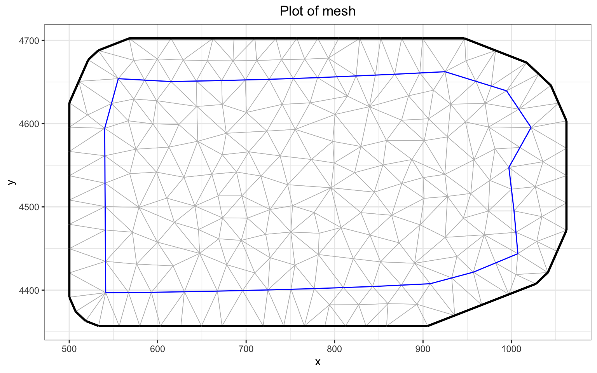

##Install if need be: you will need v2.0
# devtools::install_github(‘PhilipMostert/PointedSDMs@main’)
library(PointedSDMs)
library(INLA)
library(ggmap)
library(terra)SetophagaExercise
Introduction
This exercise is designed to let you set up your first integrated distribution model. By the end of it, you should know the steps you need to take to do this. Details will come later. As an example, we use three datasets containing three Setophaga species collected around Pennsylvania state (United States of America). We will walk through a model for one species, and then you can try it for another species.
Setophaga example
This example aims to predict the distribution of three species of genus setophaga across Pennsylvania state. This example is notable in integrated modelling since it has been used by two seminal papers in the field, namely those by: Isaac et al. (2020) and Miller et al. (2019). This file extends the example by adding two additional datasets containing a further two species.
We will start by modelling the Black-throated blue warbler, Setophaga caerulescens. We will use the following data:
- a map of Pennsylvania
- eBird: Citizen Science data
- BBS: North American breeding bird survey data: we will use it as the number of stops where the species was seen (out of 50)
- BBA: Pennsylvania Breeding Bird Atlas. Presence/Absence
- elevation: Elevation. Height above sea level. Probably sea level at low tide nowadays.
- canopy: canopy cover (a proxy for forest)
Model preparations
The first step in our analysis is to load in the packages required.
Additional objects required by PointedSDMs and the R-INLA (Martins et al. 2013) and inlabru (Bachl et al. 2019) packages need to be assembled.
An sf object of Pennsylvania (obtained using the USAboundaries (rOpenSci 2018) package) is the first of these objects required, and it will be used to construct an inla.mesh object as well as help with the plotting of graphics. In order to create one of these polygons objects, we are first required to define the projection reference system.
# if you need to download the package, you have to get it from GitHub
# devtools::install_github("ropensci/USAboundaries")
proj <- "+proj=utm +zone=17 +datum=WGS84 +units=km"
PA <- USAboundaries::us_states(states = "Pennsylvania")
PA <- st_transform(PA, proj)Next, we want our data for all three species. We have already downloaded it for you. We reformat it slightly, so each species is in a separate list element. Later we will look at multi-species models.
Data <- readRDS("../Data/Vignette_setophaga/SetophagaData.rds")
SetohagaData <- sapply(unique(Data$eBird$Species_name), function(sp, data) {
res <- list(
ebird = data$eBird[data$eBird$Species_name==sp,],
BBA = data$BBA[data$BBA$Species_name==sp,],
BBS = data$BBS[data$BBS$Species_name==sp,]
)
res$BBA$NPres <- 1 # so we can use a biomial
res
}, data=Data, simplify=FALSE)If you want to see how to dowmload the data with the spocc package, open up this fold
# We download the data from GBIF, using the spocc package.
species <- c('caerulescens', 'fusca', 'fusca')
dataSets <- list()
# This downloafs the data from GBIF
# read each species separately.
for (bird in species) {
raw_data <- spocc::occ(
query = paste('Setophaga', bird),
from = "gbif",
date = c("2005-01-01", "2005-12-31"),
geometry = st_bbox(st_transform(PA,
'+proj=longlat +datum=WGS84 +no_defs')))$gbif
# Extract eBird data
rows <- grep("EBIRD", raw_data$data[[paste0('Setophaga_', bird)]]$collectionCode)
raw_data <- data.frame(raw_data$data[[1]][rows, ])
raw_data$Species_name <- rep(bird, nrow(raw_data))
data_sp <- st_as_sf(
x = raw_data[, names(raw_data) %in% c("longitude", "latitude", 'Species_name')],
coords = c('longitude', 'latitude'),
crs = '+proj=longlat +datum=WGS84 +no_defs')
data_sp <- st_transform(data_sp, proj)
dataSets[[paste0('eBird_', bird)]] <- data_sp[unlist(st_intersects(PA, data_sp)),]
}The BBA data sets presence/absence (or rather detection/non-detection). Here we treat the BBS data as binomial, but we can also use them as counts.
Finally we get our covariate data, from the PointedSDMs package:
covariates <- scale(terra::rast(system.file('extdata/SetophagaCovariates.tif',
package = "PointedSDMs")))
names(covariates) <- c('elevation', 'canopy')
plot(covariates)
Now we have the data in several datasets. Next we need to integrate it into a common format that PointedSDMs can use. First, we use the PA map to create a mesh. We need the mesh because our model is a continuous surface. We approximate this with a tesselation of triangles. The mesh here is too simple for a good analysis, but means that we can run the model quickly.
mesh <- inla.mesh.2d(boundary = inla.sp2segment(PA),
cutoff = 10 * 5,
max.edge = c(1, 1.24) * 40, #120
offset = c(0.05, 0.4) * 100,
crs = st_crs(proj))
mesh_plot <- ggplot() +
gg(mesh) +
ggtitle('Plot of mesh') +
theme_bw() +
theme(plot.title = element_text(hjust = 0.5))
mesh_plot
Running the Model
Now we have our data, we need to organise it into a single object. This means we can do hing slike align the different data, e.g. so each data point has the right covariate data. The startISDM() function does this. This needs a few arguments, which we will discuss in more detail later.
caerulescensModel <- startISDM(SetohagaData$Setophaga_caerulescens, # the data
Boundary = PA, # a polygon of the boundary
Projection = proj, # the geographical projection
Mesh = mesh, # the mesh, which we have just made
responsePA = 'NPres', # Name of response for binomial data
trialsPA = 'Trials', # Name of no. of trials for binomial data
spatialCovariates = covariates # Environmental covariates
)The purpose of this is to package the data together, so that the data all line up with each other, and can be passed to INLAbru nicely. As a side product we can plot the data.
caerulescensModel$plot() +
theme_bw() +
ggtitle('Plot of the datasets') +
theme(plot.title = element_text(hjust = 0.5))
So the BBA data are from the centre of Pennsylvania, and the other data are more spread out.
Now we can fit the model:
modelOptions <- list(control.inla =
list(int.strategy = 'eb',
diagonal = 0.1),
verbose = FALSE,
safe = TRUE)
caerulescensEst <- fitISDM(data = caerulescensModel, options = modelOptions)This takes a few seconds (the options helo with a few thingsa, including speeding it up). Once we have this, we can predict the distribution. Here we show the mean and standard deviation.
caerulescensPredictions <- predict(caerulescensEst,
data = fm_pixels(mesh = mesh,
mask = PA),
spatial = TRUE,
n.samples = 100) # n.samples=1e3 is better, but slower
plot(caerulescensPredictions, variable = c('mean', 'sd'))
The blotchiness of the map, particularly the sd, is because of the coarse mesh. We will improve this later, but for now if you’ve got this far successfully, you’ve succeeded!
We can also look at the parameter estimates. As this is the first model, we do not expect it to be brilliant.
summary(caerulescensEst)$fixedSummary of 'modISDM' object:
inlabru version: 2.10.1
INLA version: 24.06.04
Types of data modelled:
ebird Present only
BBA Present absence
BBS Present absence mean sd 0.025quant 0.5quant 0.975quant mode kld
elevation 2.451 0.086 2.283 2.451 2.620 2.451 0
canopy 1.339 0.060 1.222 1.339 1.456 1.339 0
ebird_intercept -4.688 0.195 -5.071 -4.688 -4.306 -4.688 0
BBA_intercept 11.771 1.506 8.820 11.771 14.722 11.771 0
BBS_intercept -3.259 0.143 -3.539 -3.259 -2.978 -3.259 0The intercepts are generally less important: they are largely driven by the sampling intensity. The canopy and elevation effects are more interesting, and suggest the Black-throated blue warbler prefers to be high up in a canopy.
Your turn
Now we can try the same analysis with a different species. These are the steps you should take:
- organise the data with
startISDM() - fit the model to the data with
fitISDM() - Plot the predictions
You can choose a species: there is S. magnolia (the magnolia warbler), and S. fusca (the Blackburnian warbler, but not this one)
Aside from making a pretty map, the main ecological question is whether the different species respond in similar ways to canopy cover and elevation.
S. magnolia
magnoliaData <- SetohagaData$Setophaga_magnoliaAnswer: How to use startISDM for S. magnolia
magnoliaModel <- startISDM(SetohagaData$Setophaga_magnolia, # the data
Boundary = PA, # a polygon of the boundary
Projection = proj, # the geographical projection
Mesh = mesh, # the mesh, which we have just made
responsePA = 'NPres', # Name of response for binomial data
trialsPA = 'Trials', # Name of no. of trials for binomial data
spatialCovariates = covariates # Environmental covariates
)
magnoliaModel$plot() +
theme_bw() +
ggtitle('Plot of the datasets') +
theme(plot.title = element_text(hjust = 0.5))Answer: How to use fitISDM for S. magnolia
magnoliaEst <- fitISDM(data = magnoliaModel, options = modelOptions)Answer: Predict the distribution of S. magnolia
magnoliaPredictions <- predict(magnoliaEst,
data = fm_pixels(mesh = mesh,
mask = PA),
spatial = TRUE,
n.samples = 100) # n.samples=1e3 is better, but slower
plot(magnoliaPredictions, variable = c('mean', 'sd'))Answer: Get the estimates from the model
summary(magnoliaEst)$fixedS. fusca
fuscaData <- SetohagaData$Setophaga_fuscaAnswer: How to use startISDM for S. fusca
fuscaModel <- startISDM(SetohagaData$Setophaga_fusca, # the data
Boundary = PA, # a polygon of the boundary
Projection = proj, # the geographical projection
Mesh = mesh, # the mesh, which we have just made
responsePA = 'NPres', # Name of response for binomial data
trialsPA = 'Trials', # Name of no. of trials for binomial data
spatialCovariates = covariates # Environmental covariates
)
fuscaModel$plot() +
theme_bw() +
ggtitle('Plot of the datasets') +
theme(plot.title = element_text(hjust = 0.5))Answer: How to use fitISDM for S. fusca
fuscaEst <- fitISDM(data = fuscaModel, options = modelOptions)Answer: Predict the distribution of S. fusca
fuscaPredictions <- predict(fuscaEst,
data = fm_pixels(mesh = mesh,
mask = PA),
spatial = TRUE,
n.samples = 100) # n.samples=1e3 is better, but slower
plot(fuscaPredictions, variable = c('mean', 'sd'))Answer: Get the estimates from the model
summary(fuscaEst)$fixedReferences
Bachl, Fabian E, Finn Lindgren, David L Borchers, and Janine B Illian. 2019. “Inlabru: An r Package for Bayesian Spatial Modelling from Ecological Survey Data.” Methods in Ecology and Evolution 10 (6): 760–66. https://doi.org/10.1111/2041-210X.13168.
Isaac, Nick JB, Marta A Jarzyna, Petr Keil, Lea I Dambly, Philipp H Boersch-Supan, Ella Browning, Stephen N Freeman, et al. 2020. “Data Integration for Large-Scale Models of Species Distributions.” Trends in Ecology & Evolution 35 (1): 56–67. https://doi.org/10.1016/j.tree.2019.08.006.
Martins, Thiago G, Daniel Simpson, Finn Lindgren, and Håvard Rue. 2013. “Bayesian Computing with INLA: New Features.” Computational Statistics & Data Analysis 67: 68–83. https://doi.org/10.1016/j.csda.2013.04.014.
Miller, David AW, Krishna Pacifici, Jamie S Sanderlin, and Brian J Reich. 2019. “The Recent Past and Promising Future for Data Integration Methods to Estimate Species’ Distributions.” Methods in Ecology and Evolution 10 (1): 22–37. https://doi.org/10.1111/2041-210X.13110.
rOpenSci. 2018. “USABoundaries.” https://github.com/ropensci/USAboundaries.